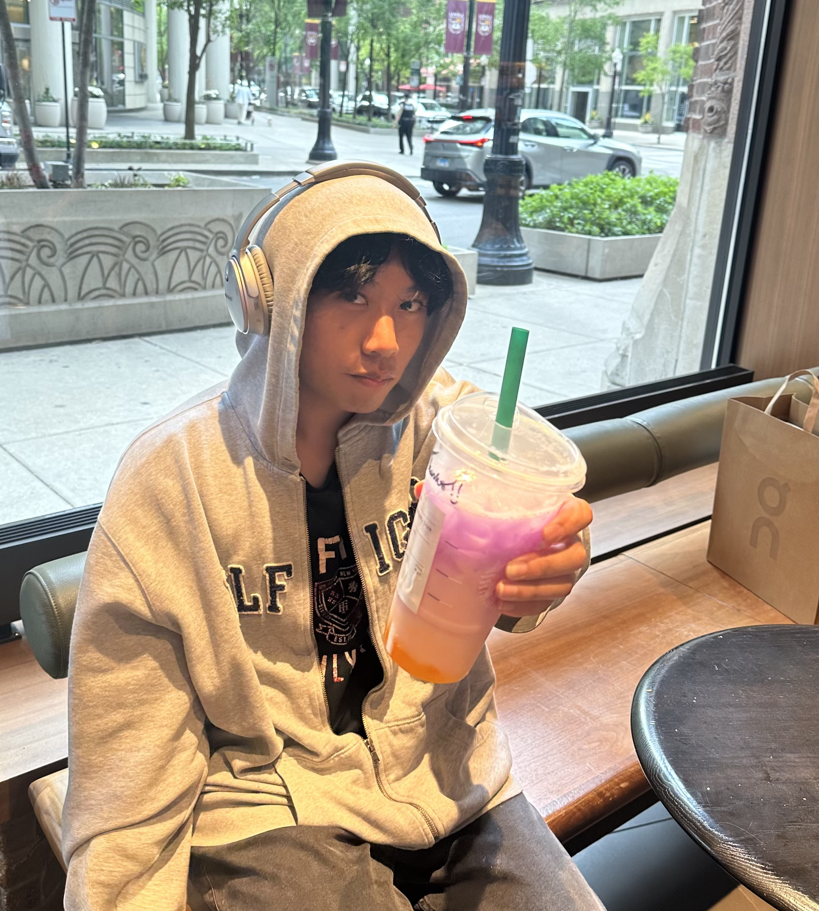
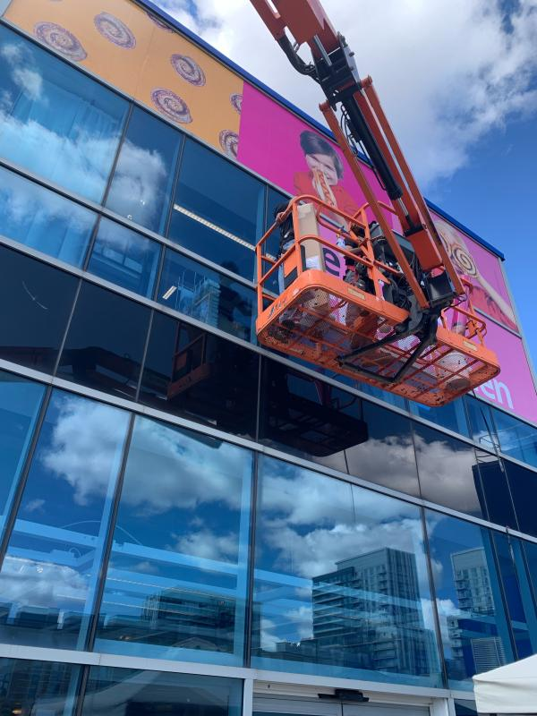
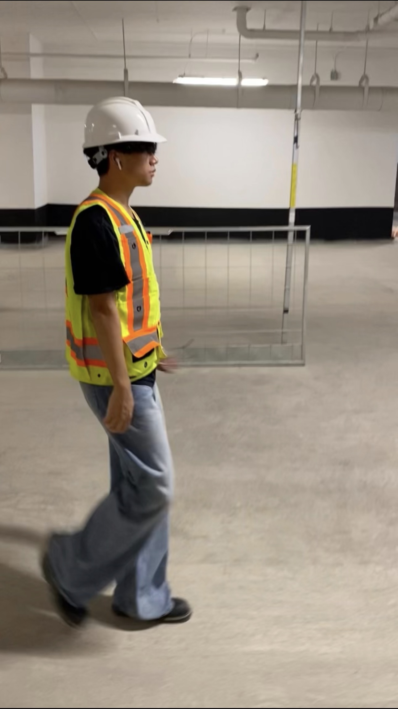

About
I am Jaundel Simon, a Computer Engineering undergraduate at Toronto Metropolitan University in Mississauga, Ontario.
My work spans digital hardware, computer architecture, software systems, and machine learning. I have designed processors and neural accelerators in VHDL, worked on inference routing and neural cellular automata, and built application software.
My engineering process is built around questions that can be tested. I establish a baseline, verify the implementation, measure the result, and revise the design when the evidence disagrees. I favor durable fundamentals over collecting frameworks, go deeper when a project exposes a real gap, and use that broader context to make technical decisions for myself.

Experience
Signage Installer, Signscaper Installation Inc.
September 2023 - December 2025
Installed wayfinding signs, branded wall graphics, privacy-frost vinyl, and point-of-purchase displays for clients including the NBA, Scotiabank, the University of Toronto, Microsoft, RBC, and Wine Rack.

Warehouse Associate, Price Group Corp.
June 2022 - September 2023
Prepared pickup and delivery orders, supported customer inquiries, coordinated with logistics, and maintained warehouse operations under fast-paced conditions.
